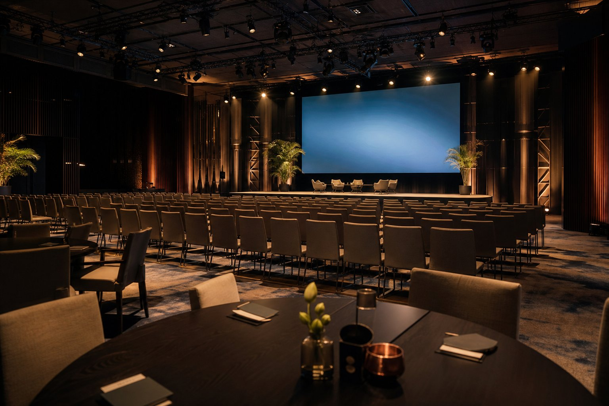
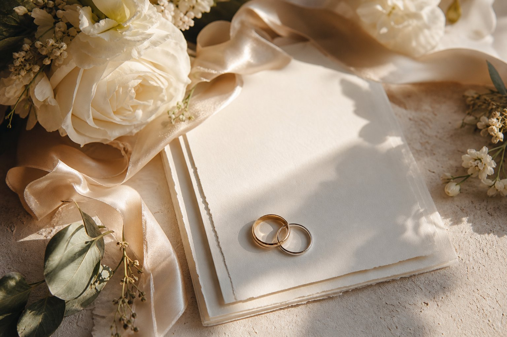
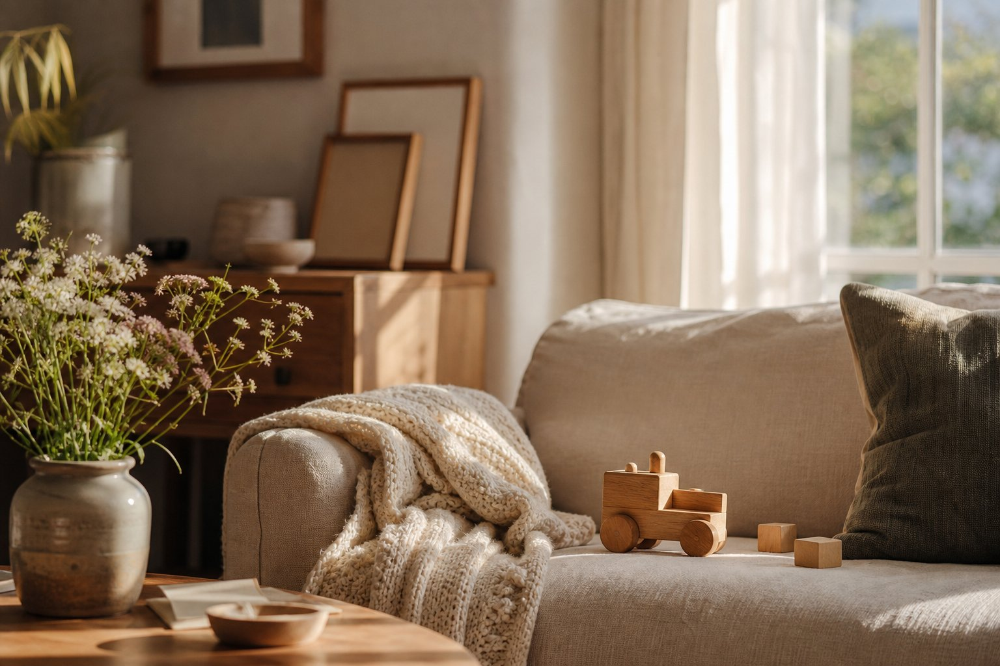

01 / WEB
Weby na míru
Moderní, rychlé a přehledné weby bez univerzálních šablon. Od prvního návrhu přes vývoj až po spuštění a péči.
Pomáhám značkám i lidem vyprávět jejich příběh — čistým webem, funkčním e-shopem nebo fotografiemi, ke kterým se budete rádi vracet.


Technické myšlení vývojáře propojuji s citem pro kompozici a příběh. Výsledkem je značka, která skvěle funguje a zároveň má vlastní tvář.
Moderní, rychlé a přehledné weby bez univerzálních šablon. Od prvního návrhu přes vývoj až po spuštění a péči.
Vlastní e-shopové řešení s administrací, skladem, dopravci, kupóny, fakturami a QR platbou.
Přirozené fotografování firemních akcí, svateb a rodinných příběhů. Nenápadně, citlivě a bez zbytečného aranžování.
Pravidelná údržba, optimalizace, produktové snímky i nový obsah. Váš web a vizuál mohou růst společně.
Nejde mi o strnulé pózy. Hledám světlo, drobné detaily a okamžiky, které mají atmosféru. Výsledné snímky upravuji v jednotném, přirozeném stylu.
Konference, večírky, otevření provozovny i zákulisí vašeho týmu. Reportáž, která ukáže atmosféru i značku.
Od tichých příprav po večerní oslavu. Váš den zachytím citlivě, nenápadně a v celém jeho příběhu.

U vás doma nebo venku, kde je vám dobře. Bez stresu, s prostorem pro spontánnost a opravdové emoce.
Každou zakázku nacením individuálně podle délky focení, místa a výsledného rozsahu. Napište mi pár vět o své představě a ozvu se s konkrétní nabídkou.
Poptat foceníE-shop, který se přizpůsobí vašemu podnikání — ne naopak. Bez závislosti na cizí šabloně a s funkcemi, které skutečně využijete.
Žádné koncepty do šuplíku. Tohle jsou weby, které dnes slouží skutečným firmám a jejich zákazníkům.
Přehled služeb, reference a kontaktní formulář.
One-page / Reality↗Integrovaný katalog a propracovaný kontakt.
Vícestránkový web↗Reference, přehled služeb a interaktivní mapa.
Katalog / Výroba↗Katalog originální zakázkové tvorby.
Firemní web↗Moderní prezentace stavební společnosti.
Další může být váš↗Pojďme vytvořit něco, co bude fungovat i bavit.
Ať jde o nový web nebo svatební den, vždy budete vědět, co se děje, kdy bude hotovo a kolik to bude stát.
Řeknete mi svou představu, cíle a termín. Doptám se na vše podstatné a doporučím nejlepší cestu.
Připravím srozumitelný rozsah, cenovou nabídku a harmonogram bez skrytých překvapení.
Navrhuji, programuji nebo fotografuji. V průběhu zůstáváme v kontaktu a společně ladíme výsledek.
Dostanete hotový web nebo pečlivě upravené fotografie. A pokud budete chtít, zůstávám nablízku i potom.
Každý projekt je jiný, proto cenu připravuji na míru. Po krátké úvodní konzultaci ode mě dostanete konkrétní nabídku zdarma a bez závazků.
Jednodušší web může být hotový do týdne. Rozsáhlejší prezentace nebo e-shop obvykle zabere 2 až 4 týdny podle rozsahu a připravenosti podkladů.
Za focením rád přijedu po celé České republice. Rodinné focení může proběhnout u vás doma nebo venku, akce a svatby přímo na místě konání.
Pečlivě vybrané a upravené snímky dostanete v online galerii ve vysokém rozlišení i ve verzi vhodné pro sdílení.
Ano. Pokud si to přejete, připravím přehlednou administraci a ukážu vám, jak měnit texty, fotografie nebo produkty bez programování.
Napište mi pár vět o svém webu, akci, svatbě nebo rodinném focení. Ozvu se a domluvíme další krok.
janminarikcz@icloud.com